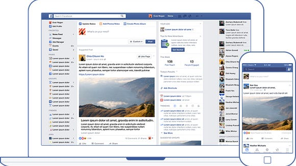
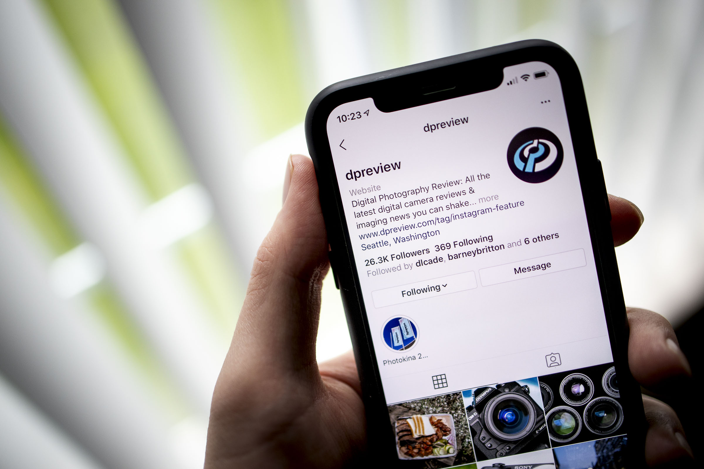
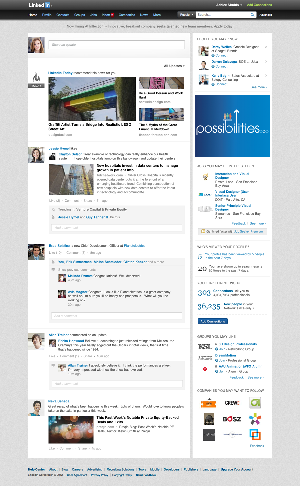

<section fxLayout="row" fxLayoutAlign="space-around center">
  <div class="cards">
    <input class="card-control" id="facebook" name="card-control" type="radio" checked="checked" />
    <div class="card card--facebook">
      <div class="col">
        <h2> <strong>Social Media</strong>Facebook</h2>
        <p>Social media at its best! Add me as a friend and socially connect with what I am doing in my
          life right now.
        </p><a class="btn" href="https://www.facebook.com/hellochrisyou" target="_blank">Add me!</a>
      </div>
      <div class="col col--right"></div>
    </div>
    <input class="card-control" id="github" name="card-control" type="radio" />
    <div class="card card--github">
      <div class="col">
        <h2> <strong>Social Media</strong>Github</h2>
        <p>A code repository of my portfolio work. A version control using Git, you can fork or review
          my code online. Without a doubt, one of the most essential and useful tools I have ever
          worked with.</p><a class="btn" href="https://www.github.com/hellochrisyou" target="_blank">Add me!</a>
      </div>
      <div class="col col--right">
      </div>
    </div>
    <input class="card-control" id="instagram" name="card-control" type="radio" />
    <div class="card card--instagram">
      <div class="col">
        <h2> <strong>Social Media</strong>Instagram</h2>
        <p>Instagram inspires creativity around the world, helping over 1 billion people create and
          share. Explore my photos of what I enjoy doing the most.</p><a class="btn"
          href="https://www.instagram.com/chris22311" target="_blank">Add me!</a>
      </div>
      <div class="col col--right">
      </div>
    </div>
    <input class="card-control" id="linkedin" name="card-control" type="radio" />
    <div class="card card--linkedin">
      <div class="col">
        <h2> <strong>Social Media</strong>Linkedin</h2>
        <p>Feel free to add me on Linkedin. It is a valuable resource for career and busienss
          professionals to network and obtain resources and support; and build relationships with
          potential customers, clients, and partners.</p><a class="btn" href="https://www.linkedin.com/in/hellochrisyou"
          target="_blank">Add
          me!</a>
      </div>
      <div class="col col--right">
      </div>
    </div>
    <input class="card-control" id="twitter" name="card-control" type="radio" />
    <div class="card card--twitter">
      <div class="col">
        <h2> <strong>Social Media</strong>Twitter</h2>
        <p>From breaking news and entertainment to sports and politics, from big events to everyday
          interests. If it's happening
          anywhere, it's happening on Twitter.</p><a class="btn" href="https://twitter.com/ChrisYou1"
          target="_blank">Add
          me!</a>
      </div>
      <div class="col col--right"></div>
    </div>
    <nav class="main-nav">
      <label class="main-nav__item fa fa-facebook active" for="facebook"></label>
      <label class="main-nav__item fa fa-github" for="github"></label>
      <label class="main-nav__item fa fa-instagram" for="instagram"></label>
      <label class="main-nav__item fa fa-linkedin" for="linkedin"></label>
      <label class="main-nav__item fa fa-twitter" for="twitter"></label>
    </nav>
  </div>
</section>